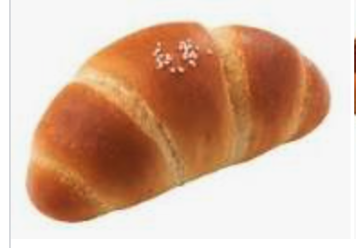

안녕하세요, 저는 현재 멋사 백엔드 스쿨 10기를 공부하고 있는 김민지입니다.
최근, 알바로 와플대학을 하고 있어, 주변에 맛있는 빵집을 찾는 것에 재미를 느끼는 중입니다.
최근 가장 관심있는 취미는, 맛있는 빵 찾기입니다. 불과 집에서 5분 정도의 거리의 Baker Lee라는 빵집의 당근케이크와 카페인중독의 햅쌀와플을 정말 좋아합니다!!
또다른 취미는, 밤에 노래 들으면서 산책하기 입니다!
저희 집 주변에는 강변에 산책로가 있는데, 멋사 교육이 끝난 후에, 노래를 크게 들으며 산책하는 것에 즐거움을 느끼고 있습니다.